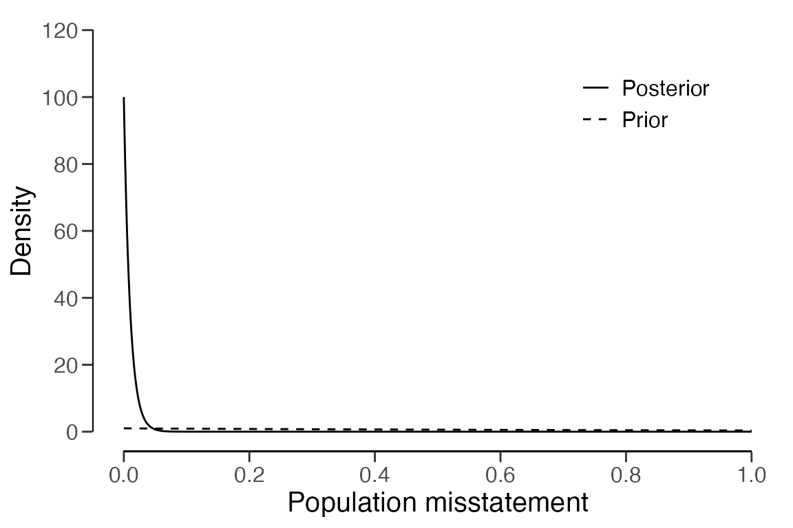

Planning statistical audit samples
Koen Derks
2023-12-01
Source:vignettes/sample-planning.Rmd
sample-planning.RmdIntroduction
This vignette illustrates how to use the planning()
function from the jfa package to calculate a minimum
sample size for audit sampling.

Required information
First, planning a minimum sample requires knowledge of the conditions that lead to acceptance or rejection of the population (i.e., the sampling objectives). Typically, sampling objectives can be classified into one or both of the following:
- Hypothesis testing: The goal of the sample is to obtain evidence for or against the claim that the misstatement in the population is lower than a given value (i.e., the performance materiality).
- Estimation: The goal of the sample is to obtain an accurate estimate of the misstatement in the population (with a minimum precision).
Second, it is advised to specify the expected (or tolerable) misstatements in the sample. The expected misstatements are the misstatements that you allow in the sample, while still retaining the desired amount of assurance about the population. It is strongly recommended to set the value for the expected misstatements in the sample conservatively to minimize the chance of the observed misstatements in the sample exceeding the expected misstatements, which would imply that insufficient work has been done in the end.
Next to determining the sampling objective(s) and the expected
misstatements, it is also important to determine the statistical
distribution linking the sample outcomes to the population misstatement.
This distribution is called the likelihood (i.e., poisson,
binomial, orhypergeometric). All three
aforementioned likelihoods are commonly used in an audit sampling
context, however, poisson is the default likelihood in
jfa because it is the most conservative of the
three.
Classial approach
To illustrate how the planning() function can be used to
calculate a minimum sample size for audit sampling, we will first
demonstrate how to set up a sample with the purpose of hypothesis
testing and subsequently show how to plan a sample with the purpose of
estimation. In both cases, we will tolerate zero misstatements in the
sample.
Hypothesis testing
First, let’s take a look at how you can use the
planning() function to calculate the minimum sample size
for testing the hypothesis that the misstatement in the population is
lower than the performance materiality. In this example the performance
materiality is set to three percent of the total population value,
meaning that the population cannot contain more than three percent
misstatement.
Sampling objective: Calculate a minimum sample size such that, when no misstatements are found in the sample, there is a 95 percent chance that the misstatement in the population is lower than three percent of the population value.
Single-stage sampling plans
Concretely, in a single-stage sampling plan the auditor wants to directly apply the sampling objective. More specifically, they want to reduce the risk of the misstatements \(k\) coming from a population in which the misstatement rate is equal to \(\theta_{max}\). This risk should be lower than the audit risk \(\alpha\).
\[\begin{equation} p(k = 0 | n, $\theta_{max}$) \leq \alpha \end{equation}\]
A minimum sample size for this sampling objective can be calculated
by specifying the materiality parameter in the
planning() function, see the command below. Next, a summary
of the statistical results can be obtained using the
summary() function. The result shows that, given zero
tolerable misstatements, the minimum sample size is 99 items or units.
The auditor can allow for misstatements (e.g., tolerate \(k\) = 1 misstament) in the sample by
providing an integer value to the expected argument of the
function.
##
## Classical Audit Sample Planning Summary
##
## Options:
## Confidence level: 0.95
## Materiality: 0.03
## Hypotheses: H₀: Θ >= 0.03 vs. H₁: Θ < 0.03
## Expected: 0
## Likelihood: binomial
##
## Results:
## Minimum sample size: 99
## Tolerable errors: 0
## Expected most likely error: 0
## Expected upper bound: 0.029807
## Expected precision: 0.029807
## Expected p-value: 0.049023This can be verified by making sure that the probability of finding \(k\) = 0 misstatements in \(n\) = 99 samples given \(\theta_{max}\) = 0.03 is lower than the audit risk \(\alpha\) = 0.05
pbinom(q = 0, size = 99, prob = 0.03) < 0.05## [1] TRUEMultiple-stage sampling plans
Instead of using a single-stage sampling plan, a multi-stage sampling plan enables the evaluation of the sample at an intermediate stage. If the results do not provide sufficient evidence to make a conclusion, the second stage is initiated. More specifically, in the first stage of a multiple-stage sampling plan the auditor draws an initial sample of size \(n_1\). If this sample contains a tolerable number of misstatements (typically 0), then the auditor can approve the population. However, if the sample contains more than the tolerable number of misstatements, the population cannot be approved. In this case, the initial sample is extended with a second sample of \(n_2\) items. If this second batch of items reveals a tolerable number of misstatements, then the population can still be approved. If this is not the case, then the population should be rejected or a third sample with \(n_3\) items should be inspected.
In the classical (i.e., frequentist) approach, multiple-stage sampling plans can be computed by breaking down the audit risk into several components. For instance, if the auditor wants to initially plan for \(k\) = 0 misstatements, but wants to extend the sample if \(k\) = 1 misstatement is found, then the audit risk consists of:
- \(p(k = 0 | n_1, \theta_{max})\): The probability of finding \(k\) = 0 misstatements in the first sample of \(n_1\) items; plus
- \(p(k = 1 | n_1, \theta_{max})\): The probability of finding \(k\) = 1 misstatement in the first sample of \(n_1\) items; multiplied by
- \(p(k = 0 | n_2, \theta_{max})\): The probability finding \(k\) = 0 misstatements in the second sample of \(n_2\) items.
The sum of these probabilities should be lower than, or equal to, the audit risk \(\alpha\).
\[\begin{equation} p(k = 0 | n_1, \theta_{max}) + p(k = 1 | n_1, \theta_{max}) \cdot p(k = 0 | n_2, \theta_{max}) \leq \alpha \end{equation}\]
For computational reasons jfa specifies the number of samples in the extension to be equal to that of the initial sample (\(n_1\) = \(n_2\) = \(n_s\)). This means that the sample size for a two-stage sampling plan is the smallest integer \(n\) that satisfies the condition below.
\[\begin{equation} p(k = 0 | n_s, \theta_{max}) + p(k = 1 | n_s, \theta_{max}) \cdot p(k = 0 | n_s, \theta_{max}) \leq \alpha \end{equation}\]
In jfa, multiple-stage sampling plans can be
computed by providing an integer vector of tolerable misstatements in
each stage to the planning() function via its
expected argument. For instance, the following code
computed the sample size required if the auditor wants to initially plan
for \(k\) = 0 misstatements, but wants
to extend the sample if \(k\) = 1
misstatement is found. The required sample size per stage is \(n_s\) = 103, with a total sample size (if
both stages are required) of \(n\) =
206.
##
## Classical Audit Sample Planning
##
## minimum sample size = 206 (103 per stage)
## sample size obtained in 102 iterations via method 'binomial' + 'sequential'The correctness of this calculation can be verified by making sure that the probability of incorrectly rejecting the null hypothesis under the binomial distribution is below the audit risk \(\alpha\) = 0.05.
p_k0_n1 <- dbinom(x = 0, size = 103, prob = 0.03)
p_k1_n1 <- dbinom(x = 1, size = 103, prob = 0.03)
p_k0_n2 <- dbinom(x = 0, size = 103, prob = 0.03)
p_k0_n1 + p_k1_n1 * p_k0_n2 < 0.05## [1] TRUEThe minimal sample size per stage \(n_s\) = 103 is only slightly larger than the minimal sample size for the first stage if the auditor decides to use a single-stage sampling plan expecting \(k\) = 0, which is \(n\) = 99.
planning(materiality = 0.03, likelihood = "binomial", expected = 0)##
## Classical Audit Sample Planning
##
## minimum sample size = 99
## sample size obtained in 100 iterations via method 'binomial'However, the total sample size \(n\) = 206 is considerably larger larger than the minimal sample size if the auditor decides to use a single-stage sampling plan expecting \(k\) = 1, which is \(n\) = 157.
planning(materiality = 0.03, likelihood = "binomial", expected = 1)##
## Classical Audit Sample Planning
##
## minimum sample size = 157
## sample size obtained in 156 iterations via method 'binomial'As another example, we discuss a three-stage sampling plan in which the auditor wants to extend the sample after finding \(k\) = 1 misstatements in the first stage, extend further if they find \(k\) = 1 misstatement in the second stage, and still be able to approve the population if they find \(k\) = 0 misstatements in the third stage. The required sample size per each of the three stages is \(n_s\) = 209.
##
## Classical Audit Sample Planning
##
## minimum sample size = 624 (208 per stage)
## sample size obtained in 204 iterations via method 'binomial' + 'sequential'Again, this can be verified by making sure that the probability of incorrectly rejecting the null hypothesis of three percent misstatement is below the audit risk \(\alpha\) = 0.05.
p_k2_n1 <- pbinom(q = 2, size = 209, prob = 0.03)
p_k3_n1 <- dbinom(x = 3, size = 209, prob = 0.03)
p_k1_n2 <- pbinom(q = 1, size = 209, prob = 0.03)
p_k2_n2 <- dbinom(x = 2, size = 209, prob = 0.03)
p_k0_n3 <- dbinom(x = 0, size = 209, prob = 0.03)
p_k2_n1 + p_k3_n1 * p_k1_n2 + p_k3_n1 * p_k2_n2 * p_k0_n3 < 0.05## [1] TRUELike before, the minimal sample size per stage \(n_s\) = 209 is only slightly larger than the minimal sample size for the first stage if the auditor decides to use a single-stage sampling plan, which is \(n\) = 208.
planning(materiality = 0.03, likelihood = "binomial", expected = 2)##
## Classical Audit Sample Planning
##
## minimum sample size = 208
## sample size obtained in 206 iterations via method 'binomial'Estimation
Next, let’s take a look at how you can use the
planning() function to calculate the minimum sample size
for estimating the misstatement in the population with a minimum
precision. The precision is defined as the difference between the most
likely misstatement and the upper confidence bound on the misstatement.
For this example, the minimum precision is set to 2 percent of the
population value.
Sampling objective: Calculate a minimum sample size such that, when zero misstatements are found in the sample, there is a 95 percent chance that the misstatement in the population is at most 2 percent above the most likely misstatement.
A minimum sample size for this sampling objective can be calculated
by specifying the min.precision parameter in the
planning() function, see the command below. The result
shows that, given zero tolerable errors, the minimum sample size is 149
units.
planning(min.precision = 0.02, likelihood = "binomial")##
## Classical Audit Sample Planning
##
## minimum sample size = 149
## sample size obtained in 150 iterations via method 'binomial'Bayesian approach
Performing Bayesian planning requires an input for the
prior argument in the planning() function.
Setting prior = TRUE performs Bayesian planning using a default
prior conjugate to the specified likelihood. For
example, the command below uses a default gamma(\(\alpha = 1\), \(\beta = 1\)) prior distribution to plan the
sample.
##
## Bayesian Audit Sample Planning Summary
##
## Options:
## Confidence level: 0.95
## Materiality: 0.03
## Hypotheses: H₀: Θ > 0.03 vs. H₁: Θ < 0.03
## Expected: 0
## Likelihood: poisson
## Prior distribution: gamma(α = 1, β = 1)
##
## Results:
## Minimum sample size: 99
## Tolerable errors: 0
## Posterior distribution: gamma(α = 1, β = 100)
## Expected most likely error: 0
## Expected upper bound: 0.029957
## Expected precision: 0.029957
## Expected BF₁₀: 626.69You can inspect how the prior distribution compares to the expected
posterior distribution by using the plot() function. The
expected posterior distribution is the posterior distribution that would
occur if you actually observed the planned sample containing the
expected misstatements.
plot(plan)
Since the Bayesian approach to audit sampling iteratively uses the posterior distribution from the observed sample as a prior distribution for a possible second sample, it does not compromise the audit risk as a function of the number of tests. Therefore, in the Bayesian framework you can simply start sampling until there is sufficient evidence to make a decision (Rouder, 2014). That means that, whenever you find \(k\) = 1 misstatement in the initial \(n\) = 60 samples, computing the sample size extension simply requires you to compute a single-stage sample size under the expectation of one tolerable misstatement.
planning(materiality = 0.03, expected = 1, prior = TRUE)##
## Bayesian Audit Sample Planning
##
## minimum sample size = 158
## sample size obtained in 157 iterations via method 'poisson' + 'prior'The input for the prior argument can also be an object
created by the auditPrior function. If
planning() receives a prior for which there is a conjugate
likelihood available, it will inherit the likelihood from the prior. For
example, the command below uses a custom beta(\(\alpha = 1\), \(\beta = 10\)) prior distribution to plan
the sample using the binomial likelihood.
prior <- auditPrior(method = "param", likelihood = "binomial", alpha = 1, beta = 10)
planning(materiality = 0.03, expected = 0, conf.level = 0.95, prior = prior)##
## Bayesian Audit Sample Planning
##
## minimum sample size = 89
## sample size obtained in 90 iterations via method 'binomial' + 'prior'However, when there is no conjugate likelihood available, specifying
the likelihood argument in planning() is
required. For instance, the command below uses a Normal(\(\mu = 0\), \(\sigma = 0.1\)) prior in combination with
the binomial likelihood to plan the sample size.
prior <- auditPrior(method = "param", likelihood = "normal", alpha = 0, beta = 0.1)
planning(
materiality = 0.03, expected = 0, conf.level = 0.95,
likelihood = "binomial", prior = prior
)##
## Bayesian Audit Sample Planning
##
## minimum sample size = 95
## sample size obtained in 96 iterations via method 'binomial' + 'prior'